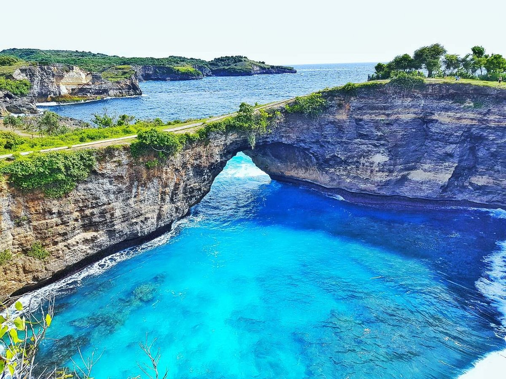

Home | Harga Tiket | About Trip | Gallery | Kontak
Dibawah INI FOTO-FOTO TUJUAN TOOUR DI JASA SAYA: => Bali: 1. Patung Garuda Wisnu Kencana
 di Bali bisa melebihi Patung Liberty.jpg)


Home | Harga Tiket | About Trip | Gallery | Kontak
Dibawah INI FOTO-FOTO TUJUAN TOOUR DI JASA SAYA: => Bali: 1. Patung Garuda Wisnu Kencana
2. Pantai Sanur 3. Pantai Kuta 4. Nusa Penida  5. Tanah Lot=> yogyakarta: 1. Tugu Jogja 2. Keraton jogja 3. Candi Prambanan 4. Tebing Breksi